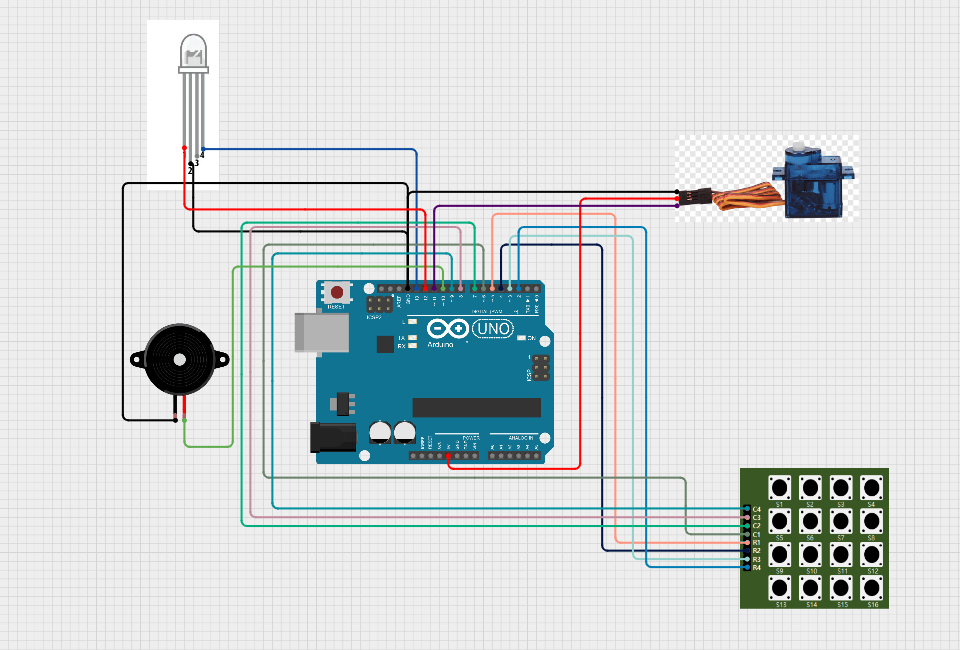
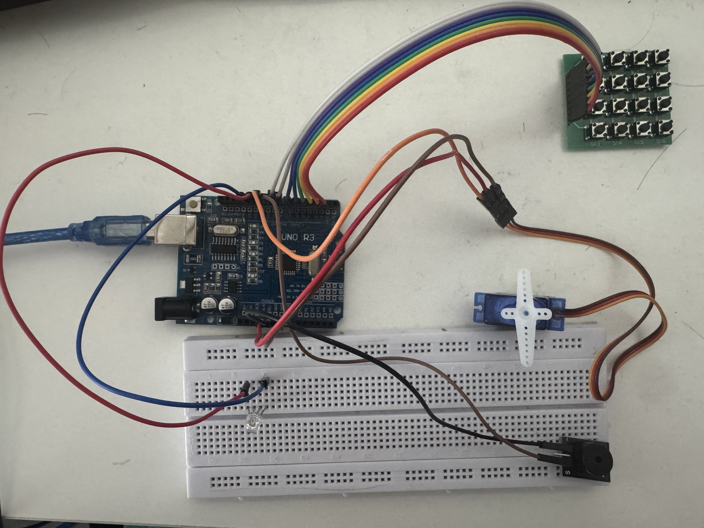

Security Door Simulation
Industrial Automation & Access Control Systems
Project Demonstration
Technical Documentation
01. System Schematics

02. Wiring Prototype (Real Life)

Technical Source Code
Review the firmware and system logic on GitHub.